Roger Federer and the Evolution of the Modern Forehand - Part 1¶
Roger Federer and the Evolution of the Modern Forehand
Part 1
John Yandell
Based on the analysis of hundreds of pro forehands filmed in high speed video, this series of articles developed a framework for understanding the core elements in the modern forehand, and also the technical variations across the grip styles. Then Roger Federer emerged as the world's dominant player, and started hitting forehands that looked different than any of the other players we have studied.
Everyone loves watching him, for obvious reasons. His forehand is one of the biggest shots in the game, and also one of the most beautiful. It's explosive, fluid, and effortless. You can almost see his racket head jump to warp speed on the forward swing. At the same time it looks so natural and relaxed.
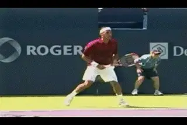
His forehand just looks different than the other top players. But why and how?
<
Then there is the amazing variety. He's very natural with either an open or a neutral stance. He can play the ball on the rise, he can break off incredible short angles. He can play higher balls from deeper in the court like Roddick or Hewitt. One of the most amazing things is his ability to combine great velocity with heavy spin.
If you want proof of the flexibility and variety in his forehand, all you have to do is look at the range of his finishes. He can look like Pete Sampras, Andre Agassi, Gustavo Kuerten or Andy Roddick. And sometimes that's in the same rally. How can this be possible? How does he do it? What can we learn from him? What can we emulate? Is it a good idea to even try? The only way to answer these questions is to look in detail at this phenomenal shot and all its variations.
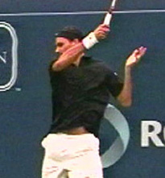
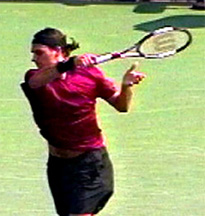
Federer's array of finishes--more variety than any player in modern tennis.
A logical question to ask is: How does his forehand fit into the previous analytic picture we developed? The short answer is that it doesn't. It breaks the paradigm.
When I started trying to break down the shot, I couldn't reconcile the things Federer appeared to be doing with what I thought I knew about the modern forehand. It proved to be far more complex than the forehands of the other great players. Some things he did seemed classical. But other things seemed extreme. Gradually it dawned on me that what made his forehand different was that he was doing things like both the classical and the extreme players, sometimes at the same time.
Caption: Classical? Extreme? Both? Or something more?
The more I looked the more amazed I was at the variety of technical combinations he could produce. I began to see that his forehand synthesized elements from technical styles that previously seemed incompatible. It was literally something new. I don't think it's going too far to claim that Federer is taking the technical evolution of the forehand to a new level. Federer can combine the velocity associated the classical style, with the heavy spin associated with the extreme styles in virtually any combination. If we look at all the variables in his forehand and how they can be combined, there are about 25 possible shot variations, maybe even more. But that's not just theoretical. I have probably seen most of them in the high speed footage. Now don't get me wrong, all good players have variety. But Federer is the first player I've seen with 25 forehands--some of them absolutely deadly and everyone of which can hurt you in some way.
So what are the classic and extreme component's in this new synthesis that Federer can use in so many ways? [His forehand is classic in the sense that he has a conservative grip structure, somewhere between a modern eastern and a mild semi-western.] (If this seems surprising, more on his exact grip below.) This grip makes it possible for him to hit on the rise, and also to step into the ball and hit effortlessly with a neutral stance and a vertical finish. But his forehand is also extreme. It incorporates the patterns of extreme torso rotation and extreme hand and arm rotation associated with the underneath grip styles. This means heavy spin, the finish on the left side, and the rotation of the right rear shoulder.
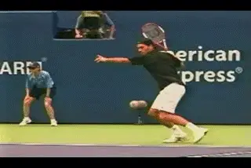
Double bend, straight, or in between. Any hitting arm position on any ball.
In addition to all this, Federer's forehand also contains something that I hadn't seen in either the classic or extreme players, at least in the players I had looked at closely in the other articles. There is a wide variety of hitting arm positions. On some balls, Federer uses a traditional double bend hitting arm position. But on many others his hitting arm is completely straight from the shoulder to the wrist. And on others still, he is somewhere in between, with the arm partially but not fully straightened out. To me the straight arm position seemed new--although I have subsequently found examples in other players like Mark Philippoussis and Paradorn Schriciphan.
The video showed that Federer varied his hitting arm position from ball to ball. Furthermore, it showed that he mixed the different hitting arm positions freely in every possible combination with the other elements in the stroke, including various degrees of torso and hand and arm rotation. His forehand had the advantages of both the classical and extreme styles, without the limitations of either. It was the best of all worlds--the ability to do almost anything with the tennis ball from almost anywhere on the court.
The game evolves through the genius of players not coaches.
It all made me think of something Nick Saviano wrote in his book Maximum Tennis, although the full significance of it didn't register with me at the time. Nick wrote that the champions of the next generation never look like the champions who precede them. (Click here.) Federer is the living proof. Despite everything we as coaches learn and try to impart, the game continues to evolve mainly through the intuitive genius of the players themselves.
So let's start by going through and looking at the various components of his forehand individually: the classic elements, the extreme elements, and the different hitting arm positions. We'll also look at how Federer combines them to create a bewildering variety of looks and shot options. I hope you'll find that this process takes us a long way toward a new understanding of the modern forehand, but at the end we'll also leave a few questions open or only partially answered, as the basis for further investigation and/or speculation.
Grip Structure
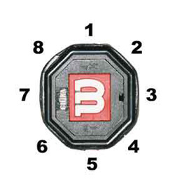
To really understand the differences in the grips, you need to look at the relationship between the heel pad, the index knuckle, and the 8 bevels.It's common to hear teaching pros and commentators start their analysis of Roger's forehand by referring to his "semi-western" grip. It's a logical inference, since Federer clearly does things like semi-western players like Agassi or even Kuerten and Roddick. It's logical, but it's not accurate. The high speed video clearly shows that Federer has a very conservative grip structure. Among modern players, Roger's grip is actually probably closest to that of the great Pete Sampras. However, it's not identical to Sampras on all points. It is also partially shifted in direction of the mild semi-western of Andre Agassi.
Since Federer's grip has been so misunderstood, let's take this chance to look at the whole complex issue of grips more systematically. The tennis racket handle actually has 8 bevels. Count the top bevel as number 1, and then count by moving clockwise or to the right. Bevel 3 is the third one down from the top. That's the one lined up with the face of the racket. Pete's heel pad is on that bevel. Pete's index knuckle is also lined up on this same bevel. That's what makes it an eastern grip--as much of his hand as possible is lined up with the bevel 3 and therefore lined up with the racket face.
Like Pete, the heel pad of Federer's racket hand is in line with bevel 3. Federer holds the racket near the end of the frame so that his hand is partially off the grip, but this is still how his heel pad is aligned in relation to the frame.
The difference is that Federer's index knuckle is shifted downward toward bevel 4. That's the next bevel down toward the bottom of the frame. To understand what this shift means, let's compare Pete and Federer to Agassi.
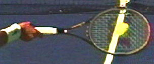
Federer's grip with the heel pad behind bevel 3, and the index knuckle on the edge of bevel 4.
Andre has his heel pad on the same bevel--bevel 3--as Pete and Roger, but he shifts his index knuckle downward one full bevel, so that it is centered on bevel 4. Federer shifts his knuckle toward bevel 4 but his knuckle isn't actually on the bevel like Agassi. Roger's index knuckle appears to be just at the top edge of bevel 4. It's definitely not resting on the bevel itself, but it's definitely shifted down from the Sampras position.
The conservative grip makes hitting the ball early more natural.
The bottom line is that this downward shift seems to puts his grip halfway between Pete to Andre, or probably a little less. And let's remember that Agassi's grip is also conservative in the modern game compared to Roddick or Hewitt.
This grip structure gives Roger the ability to do some of the things he does. To hit through the ball so effortlessly. To take the ball on the rise. To step in and hit with a neutral stance. To hit compact, relatively flat returns. All the things we associate with classical style.
But Roger combines this conservative grip with more extreme technical elements that allow him to do the same things we normally associate with a semi-western or even western style. These are the rotation of the torso and the rotation of the hand and arm. These factors probably contribute to his overall racket head speed. They are also what allow him to hit "windshield wiper" spins and angles where his racket hand eventually ends up near his left hip. They account for his amazing variety and ability to vary spin, angle and pace from ball to ball, including balls hit from almost identical locations in the court.
Two extreme factors: shoulder and hand and arm rotation.
The Head: What Does It Mean?
Before we get into a detailed discussion of all these factors and how they mix together in his swing patterns, let's address the one obvious thing everyone remarks about on Federer's groundstrokes--his head position. Most people typically note two things: how far sideways his head is turned at contact, and how long it stays that way after he actually hits the ball.
I've been asked more than once if I could find out what genius coach taught him that head position. But according to Roger, no one did. Someone on his website wrote in with this question: "I noticed that you watch the ball onto the strings longer than any player I have ever seen. You look at the point of contact long after the ball has gone. Were you taught this?"
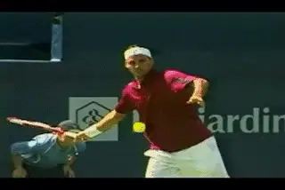
Federer's head turns during the start of the forward swing.
Roger's succinct answer: "No, it's a habit of mine. I've often been laughed at because of that." So apparently it's something he developed on his own. And now he is probably having a little laugh of his own. But in all seriousness, is it a good thing or a bad thing? There is a debate in coaching about that--and I've heard people I respect argue it both ways. However the high speed video suggests that the debate may be framed the wrong way.
There seems to be near universal agreement that the head should be still at the hit. But at what point should the head achieve this still position? You might assume you would want to get it still at the start of the forward swing. Bu this is where the high speed video shows something surprising.
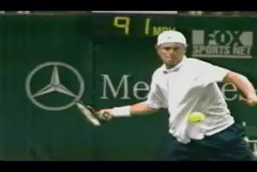
Hewitt holds his head still for only a fraction of a second.
Looking at the frames in the video we can see that he gets there only a very small fraction of a second before contact. It shows that he gets to that sideways position everyone notices only about 2/100s or 3/100s of a second before the hit. This means he is moving his head substantially during the forward swing. In fact at the critical moments when the racket is accelerating forward to the contact, the video shows that his head is turning about 45 degrees to his right!
When I first saw this, I assumed that Federer had to be the only one who moved like this, and it must be because of his extreme sideways head position. I was sure that other top players established a still head position much sooner than. Guess what? That's not exactly what the video shows. Although everyone I looked did appear to be still at the moment of contact, all their head positions were a little different. Some of them got to that still position substantially sooner than others, and others were moving just before contact like Roger.

Agassi tilts his head slightly during the start of the forward swing.
To my surprise I found that Hewitt turns his head almost as far as Federer. Like Federer, his head was also turning during the forward swing, and came to rest only a split second before contact. What about Agassi? He's often held out as the ideal model for body posture and head position. But ever notice how he cocks his head slightly to the right? Guess when he is doing that? Correct, during the forward swing. And in addition there is a little sideways turning, so he's moving his head as well until just before the hit, although far less than Hewitt or Federer.
Roddick and Safin, on the other hand, both get their heads still much earlier than Federer or Agassi. Their timing was more like I imagined. Both get their heads stil before or just at the start of the forward swing. However, both Roddick and Safin turn their heads far less to the side than Federer or even Agassi. Whereas Roger's head is more or less 90 degrees to the sideline, Safin and Roddick are more like half that, about 45 degrees to the sideline at contact.
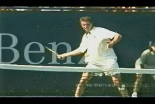
Safin turns his head less, gets still sooner but turns after the hit.
What about after the hit? Again, I couldn't find a consistent pattern. Federer keeps his head virtually immovable for around 1/10th of a second after the hit--way longer than anyone else. That's a long time when it only takes a second for the balls to travel between the rackets.
Hewitt doesn't keep his head still after contact at all. He begins turning it immediately to follow the ball. Safin does the same thing--he turns instantly. Agassi keeps his head still in that cocked position for about half as long as Federer. Sometimes Roddick keeps his head still for almost as long as Roger, but other times, he turns right after the hit. The one thing we can say is that everyone's head seems still right at the hit. But the actual head positions at the hit vary, as does the timing of establishing the head position, as does the duration.

Andy turns less but keeps his head still almost as long as Roger--sometimes.
Is there is some biomechanical advantage to that sideways position, and/or to keeping that position? Or does a player's head position falls in the category of what Nick Saviano calls "flair" rather than "fundamental"? Maybe there is a range of head positions that will all work just fine. Or maybe I'm missing something obvious.
For what it's worth, our staff did a little experiment on head position by hitting some basic forehands on a ball machine. When I tried to imitate the extreme sideways position myself, I found I that turning my head that much during the foreswing made it impossible to track the ball after the bounce. But one of our editors, Giancarlo Andreani, who plays Open level men's tennis, was more successful, even though he couldn't turn quite as far as Roger. So the jury is still out so far as I'm concerned. If some of you have opinions why don't you write into the Forum and let us know?
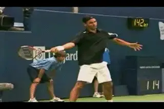
Do his mishits have anything to do with his head position?
And here is one more observation. As great as Federer is, he probably gets more miss hits than any other top player I've ever filmed, especially on the forehand side. Is it possible this is related to how far he turns his head during the swing? Maybe Federer would be even better with less movement and/or a less extreme head position. On the other hand, miss hits and all, Federer's forehand is still probably better than any forehand in the game. Maybe the unique head position is one reason.
Preparation
Fortunately, I had more success understanding most of the other elements in Federer's motion, starting with his preparation. Basic preparation is one thing that he definitely shares in common with the other top players. (link to see these same elements traced across the grip styles.)
Like the other players we've looked at, Federer begins his preparation with a compact unit turn. His feet and shoulders start the motion by turning sideways, and there is little independent movement with the hands or racket. As we saw, the unit turn completes about half of the torso rotation in the backswing, rotating the shoulders until they are about 45 degrees to the net.

Preparation with the body turn: a core element Roger shares with other players.
Completion of the Turn
The completion of the turn is also virtually identical to the other top players. Roger straightens his left arm and extends it across his body, until it points at the sideline, roughly parallel to the baseline and titled up or down at a slight angle, depending on the ball. His shoulders are turned somewhat past perpendicular to the net, and his chin is turned over his shoulder, looking toward the on coming ball. These are the classic pro forehand preparation checkpoints.
Backswing
When we looked at the pro backswings we saw that they were tremendously varied and complex. We found 4 factors to look at in assessing the differences. (link.) Applying these to Federer we can see that in most respects his backswing is very compact--as compact and possibly more compact than any top player. In one dimension, however, his backswing is actually one of the largest, if not the largest, of any player we've looked at.
Like most players, Roger keeps both hands on the racket during the unit turn. This continues as he starts his backswing. Like Roddick, Safin, or Guga, Federer's backswing has an inverted racket motion, meaning he turns the racket over from top to bottom in the early phases of the backswing.
A compact inverted backswing.
His racket begins on edge and is pointing basically forward in the ready position. But as the unit turn progresses and Federer begins to raise his hands, he rotates the top edge of the frame downward about 90 degrees. At this point it almost appears that he is going to show the face of his racket to his opponent. As his hands start to separate, the racket face continues to turn over, until the top edge of the racket has rotated another 90 degrees or so. This means the top edge of the racket, which was pointing upward in the ready position, now points down. The racket is basically on edge and perpendicular to the court, just upside down from where it started. Again this is similar to what we saw with Guga and Safin.
Size of Backswing
In the backswing article we found that the 4 factors defining the size of the motion were: (1) the height of the racket hand, (2) the height of the racket tip, (3) the side to side motion of the racket out to the player's right and then back to the left, and (4) the movement of the racket backwards away from the player.
On the first 3 points, Federer is probably more compact than any player in the modern game. He reaches the top of the backswing with the lowest hand position in the game. The top of his hand is at about shoulder level, much lower than Roddick or Hewitt, and even lower than Agassi. The only player who may be as low is Tommy Haas.
The height of his racket tip is also quite low. The tip is tilted forward toward the oppnent, making the tip height lower than any player but Roddick, who literally points the tip straight ahead with the shaft parallel to the court surface.
Because he keeps both arms bent and relatively close to his torso as he takes the racket up, Federer has very little side to side movement, about the same as Guga with a similar inverted motion. This is in contrast to players such as Agassi and Tommy Haas who take the racket noticeably out to their right at the start of the motion, and then have to bring it back to the left toward the torso.
Closed Racket Face

Federer's racket goes further behind him with his arm straighter longer.
But as Federer continues to take the racket backward and then downward, his motion begins to look different. His racket moves back further away from his body than virtually all the other players. As he does this, he straightens his arm out, and he keeps it straighter much longer than anyone else we've studied.
Most all of top players close the face of the racket at least somewhat as the racket starts down. Some players such as Roddick and Tommy Haas close the face until it is literally parallel with the surface of the court. Federer does this as well. But a lot of confusion has arisen over the years over the significance of this closed face position.
In the case of other top players we have found that the angle of the face never remains fully closed when the racket reaches the bottom of the backswing. The angle has to change so that the player can establish the double bend hitting arm position before racket starts to move forward to the ball. In fact, we saw that as the racket started forward, the amount that the racket face was still closed was a direct function of the grip, not the backswing.
The Hitting Arm Position(s)
The hitting arm: straight arm, double bend or in between.
So is it the same for Federer? No, it's significantly different. Basically everyone else we have looked at to date has one basic hitting arm position. Federer has three. There are times when he finds the double bend position, with the elbow tucked in toward to his side, and the wrist moderately laid back. When he does this, he can looks quite similar to the classical players.
But there are other times when his hitting arm is completely straight at the elbow. When he does this, the other component in the arm position, the laid back wrist, increases substantially. And sometimes, he seems to be somewhere in between the two positions.
Understanding that Federer sometimes hits with his arm completely straight helps us make sense of his backswing. We saw that he straightened his arm out more as the racket moved back, and kept it that way longer than other players. Why? Because this gives him the option of keeping it straight on the foreswing. He can either stay in the straight arm position, or let it fall into the double bend at the last moment--or choose a position between. If he let the elbow fall in all the way any sooner, he wouldn't have the same options.

The straight arm at the bottom of the backswing flows naturally to the straight hitting arm position.
You can amuse yourself by going through all the forehands in the Stroke Archive and counting the incidents of each variation. Basically I found in the high speed footage it was about evenly divided, about one third of each variation, or something close to that.
It would be great to say what the purpose and/or advantages of each of the three position. But it's not that simple. I also found that the various hitting arm positions could all be mixed with different levels of body rotation and different levels of hand and arm rotation.
This is what makes his forehand so complex, confusing, and probably, so effective. It's very difficult to isolate the exact effect of the hitting arm on a given shot because the same hitting arm position can be combined with a different pattern of shoulder or a different pattern hand and arm rotation on a different or even a very similar ball. Now you starting to understand why Federer could actually have 25 variations.
[Let's look at the double bend arm position first. When Federer uses it, we can see that at contact he can look almost classical--elbow in and wrist laid back, although there is a difference in the torso position at contact as we'll see below. After contact he can continue on to a classical finish as well, with the racket staying more or less or edge and crossing the body to reach eye level. Basically you can see this combination from almost anywhere in the court, and also, more commonly on his forehand returns.]

Same hitting arm position, different finishes.
But Federer also routinely produces a range of very different finishes from the same double bend hitting arm position. It's actually far more common for him to combine the double bend position with some degree of hand and arm rotation as we will see below. And all of these options can also be combined with various amounts of body rotation as we will also see.
Straight Hitting Arm
At the other extreme, we frequently see Federer hitting with the hitting arm completely straight from shoulder to wrist. Instead of tucking the elbow in, Federer straightens it completely out. Instead of a moderate wrist position, he lays it back a full 90 degrees and sometimes it appears, even slightly further.
When does he use the straight hitting arm? Most typically when he is hitting the ball inside out or inside in. Federer tends to use this straight arm position on inside balls and when he appears to be really going for it--and also when the ball is higher and he is off the court in the air. But you can also see the same thing on some balls in the center of the court. You'll even see it on short balls.

Sometimes the angle of the wrist is laid back 90 degrees or a little more.
This change in the hitting arm position has a dramatic impact on the shape of the swing. First it moves his contact much further in front of his body. Second, when he straightens out the hitting arm, he appears to hit much more through the line of the shot. You can see this very clearly in the animations. There is a characteristic position he often reaches where the arm and racket form nearly a straight line and point almost directly in the path of the ball.
In teaching we commonly use the phrase "hitting through the ball" or "hitting through the line of the shot" to indicate that the racket path is moving for a longer period along the intended path of the shot, or at least moving for a longer period closer to that path. In reality, the racket never moves in a straight line, but is always moving on a curve. It moves outward from the body on a curve from the player;s left to right on the way out to the contact. After contact the curve moves back from right to left on the way to the finish. (More on this in future articles in the BioMechanics section.)
"Hitting through the ball" is a powerful teaching key, but what it really means is that this curve is flatter or less severe, so the path of the racket and the ball are closer for a longer period. When Federer straightens out his hitting arm, the arc of his swing appears to curve much less to the left after the hit than other top players. The movement of the racket across the body happens later or more gradually than with the traditional double bend hitting arm position. Again, the arm and racket can actually form something close to a straight line, pointing in the direction of the shot.

The contact is further in front and the racket seems to travel much more closely to the line of the shot.
In addition to the bend at the elbow, we know that the other critical component in the hitting arm position is the angle of the wrist. We have seen that for the other players we've looked at, the elbow is bent and the wrist is laid back 60 to 90 degrees, depending on the grip. With Federer's grip his wrist lay back with the double bend is at the lower end of this scale, which is what you'd expect with a conservative grip. But when he eliminates the bend at the elbow and straightens out his arm, the angle of his wrist lay back increases significantly. If you look at the side view, you can see that it appear to be 90 degrees or even a little more on some balls with the arm fully straightened at the elbow. He can also maintain this extreme position for an extended period after contact.
As with the double bend, it's impossible to correlate this hitting arm position to either a characteristic finish, or a specific level of torso rotation. (Believe me because I learned this the hard way.) Sometimes Federer comes through with the racket close to vertical like a classic eastern. But he can also hit through the ball with the straight arm and still turn the hand completely over at the finish. Sometimes this hand rotation happens with the racket extended significantly outward from the torso. But on others, he breaks the swing off as sharply or almost as sharply as he does from the double bend position.
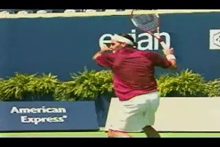
Different hitting arm positions combined with different rotations on similar incoming balls.
On some balls we see Federer using a classic hitting arm position, and on others the extreme straight arm position. On other balls he can also be between these extremes, with the arm partially straightened out. And, once again, this can be paired with the entire range of shoulder and hand and arm rotation. You'll also see him change arm positions literally from one shot to the next. And this is on similar incoming balls that he hits from nearly identical spots on the court. Watch the animation The first ball is hit with a double bend, a neutral stance, which we would consider classical elements. But they are paired with extreme shoulder and hand and arm rotation. The second ball is hit open stance with a straight hitting arm, but far less body rotation, and a classical finish.

John Yandell is widely acknowledged as one of the leading videographers and students of the modern game of professional tennis. His high speed filming for Advanced Tennis and TPA have provided new visual resources that have changed the way the game is studied and understood by both players and coaches. He has done personal video analysis for hundreds of high level competitive players, including Justine Henin-Hardenne, Taylor Dent and John McEnroe, among others.
In addition to his role as Editor of TPA he is the author of the critically acclaimed book Visual Tennis. The John Yandell Tennis School is located in San Francisco, California.
← The Forward Swing | Advanced Tennis Index | Part 2 →